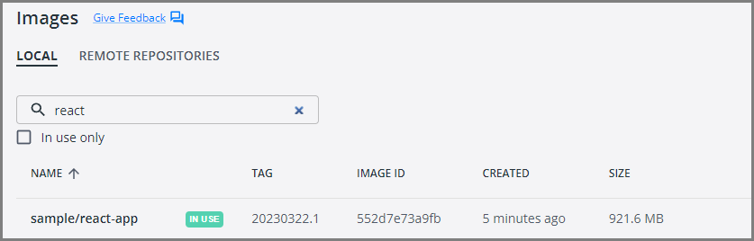
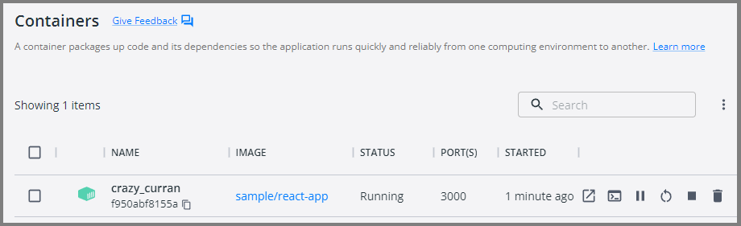

Chapter-5: Create Your Second Microservice with Node.js
Introduction
Welcome to the second lab in our Microservices chapter. In this session, I will guide you through the creation of a simple RESTful service using the Node.js npx express-generator project template.
This lab aims to illustrate the process of building a RESTful service and generating a Docker container using a Dockerfile. By following this example, you will gain a solid understanding of the fundamentals involved in creating RESTful APIs with Node.js.
Technical Scenario
As a Backend (BE) developer, you have been tasked with creating a RESTful service using Node.js, which is one of the services on our microservices list. This lab will serve as your introduction to the Microservices Architecture, starting with the basics of setting up a repository, creating a small API project, and ultimately containerizing the microservice you build. The containerized microservice will then be pushed to the Azure Container Registry (ACR).
The primary objective of this lab is to prepare an application for deployment on Kubernetes. The microservices you create in this lab will be utilized in subsequent labs, such as the creation of DevOps pipelines or the deployment to Azure Kubernetes Service (AKS). By completing this lab, you will gain a foundational understanding of how microservices can be developed, containerized, and integrated into a Kubernetes environment.
Objective
In this exercise, our objective is to accomplish and learn the following tasks:
- Step-1: Setup repository in Azure DevOps.
- Step-2: Create a new Node.js API project.
- Step-3: Test Node.js API project.
- Step-4: Add Dockerfiles to the project.
- Step-5: Docker build locally.
- Step-6: Docker run locally.
- Step-7: Publish the Docker container to ACR.
Prerequisites
Before starting this lab, ensure you have the following prerequisites in place:
- Node.js (current LTS, Node 24 at the time of writing) and npm: - Node.js Downloads.
- Docker and the VS Code Docker extension : - Docker Downloads.
- Git Client tool: - Git Downloads.
- A project in Azure DevOps and Git Repository: Initialize a Git repository for your Node.js application.
- Azure Container Registry (ACR)
Architecture Diagram
The following diagram shows the high level steps to create the REST API using Node.js.
Step-1: Setup repository in Azure DevOps.
Note
Screenshots and sample output in this chapter were captured with an earlier setup and may differ slightly from what you see with current tool versions.
For this project, you can either leverage an existing Git repository created in our first chapter or initiate a new one.
To clone an existing repository, execute the following command:
Step-2: Create a new Node.js API project
In this step, we will set up a new Node.js API project using a basic Express application as our example. To expedite the process, we'll utilize Express's scaffolding tool to generate the necessary directory structure and essential files.
Open your terminal and execute the following commands:
npx express-generator:
The npx express-generator command initializes the project, creating a structure that includes directories like 'bin' and 'routes'.
npm install:
Ensure you run npm install to set up and configure all required Node.js modules.
This step ensures that your project is equipped with the necessary dependencies, allowing seamless integration with Docker and efficient containerization of your Node.js application.
The generator pins older dependency versions, so upgrade Express (the tested sample uses Express 5) and set the package name in src/package.json to node-api (the "name" field), because the generated name follows the folder name:
folder structure
You've established the foundation for your Node.js API project, complete with a standardized directory structure and essential files.
This should have created a number of files in your directory, including bin and routes directories. Make sure to run npm install so that npm can get all of your Node.js modules set up and ready to use.
Step-3: Test the Node.js API project
Now, let's verify that our Node.js API project is functioning correctly. We'll initiate the application for the first time, utilizing the default routes defined in app.js.
Ensure you are in the project directory, and in your terminal, execute the following command to start the application:
This command launches the Node.js application, making it accessible locally.
Open your web browser and navigate to http://localhost:3000
You have now confirmed that your Node.js API project is up and running on your local environment. This preliminary test ensures the initial functionality of your application before proceeding with additional configurations or containerization.
Step-4: Add Dockerfiles to the Node.js project
To seamlessly containerize our Node.js API project, let's create a Dockerfile in the root directory of your project and incorporate the following code. The Dockerfile provides instructions for building a container image of our Node.js API.
FROM node:24-alpine
WORKDIR /opt/app
# Install dependencies first so this layer is cached until package files change
COPY src/package.json src/package-lock.json ./
RUN npm ci --omit=dev
COPY src/ .
ENV NODE_ENV=production
EXPOSE 3000
USER node
CMD ["npm", "start"]
Create a .dockerignore file next to the Dockerfile so local node_modules are not copied into the build context:
Here is what the Dockerfile does:
FROM node:24-alpineuses the small Alpine-based Node.js 24 (LTS) image from Docker Hub.COPYof the package files followed byRUN npm ci --omit=devinstalls only production dependencies frompackage-lock.json. Because this happens before the source is copied, Docker caches the layer until the package files change.COPY src/ .copies the application code.ENV NODE_ENV=productionruns Express in production mode.EXPOSE 3000documents the port the application listens on.USER noderuns the application as the non-rootnodeuser instead of root.CMD ["npm", "start"]starts the application when the container starts.
Note
Read inline comments of the Dockerfile for understanding the Dockerfile instructions
Step-5: Docker build locally
We will build the Docker container locally using the Dockerfiles and ensure that the containerized application functions as expected.
The docker build command is used to build Docker images from a Dockerfile.
output
When you run the docker build command, Docker looks for a Dockerfile in the specified directory (PATH) and reads the instructions in the file to build a new image.
The Dockerfile contains a series of instructions that define how to build the image, such as copying files, running commands, and setting environment variables.
Step-6: Docker run locally
Run the Docker container locally to verify that the application functions correctly within a containerized environment. This step ensures that the containerized application operates as expected on your local machine.
Run the docker run command to start a container based on the image:
Image

Container

This will start the Node.js application in the Docker container and map the container's port 3000 to your local machine's port 3000.
Your Node.js application is now running inside a Docker container.
Open your favorite browser and enter the following URL to see the running application in port 3000
You now have a basic Node.js application up and running. From here, you can continue building out your application by adding more and more code as per your requirements.
Step-7: Push docker container to ACR
Now that we have Docker containers ready locally, it's time to push them to the Container Registry for future deployment on Azure Kubernetes Service (AKS). This step is crucial for preparing the container for deployment in a cloud environment.
To publish a Docker container to Azure Container Registry (ACR), you will need to have the following:
Create an Azure Container Registry. If you don't have one, you can create one by following the instructions in the Azure Portal or using Azure CLI.
Log in to your Azure Container Registry using the Docker command-line interface. You can do this by running the following command:
# Azure login
az login
# set the azure subscription
az account set -s "anji.keesari"
# Log in to the container registry
az acr login --name acr1dev
# Login Succeeded
# To get the login server address for verification
az acr list --resource-group rg-acr-dev --query "[].{acrLoginServer:loginServer}" --output table
# output should look similar to this.
# AcrLoginServer
# ------------------
# acr1dev.azurecr.io
list all the Docker images that are available on the local system
docker images
# output
REPOSITORY TAG IMAGE ID CREATED SIZE
sample/aspnet-app 20230312.1 587f347206bc 8 minutes ago 216MB
.
.
.
Tag your Docker container image with the full name of your Azure Container Registry, including the repository name and the version tag. You can do this by running the following command:
Push your Docker container image to your Azure Container Registry using the Docker command-line interface. You can do this by running the following command:
docker push acr1dev.azurecr.io/sample/node-api:20240101.1
# Output
The push refers to repository [acr1dev.azurecr.io/sample/node-api]
649a035a1734: Pushed
4061bd2dd536: Pushed
c0257b3030b0: Pushed
912a3b0fc587: Pushed
a36186d93e25: Pushed
a3d997b065bc: Pushed
65d358b7de11: Pushed
f97384e8ccbc: Pushed
d56e5e720148: Pushed
beee9f30bc1f: Pushed
20240101.1: digest: sha256:73f0669d18c6cae79beb81edc8c523191710f9ec4781d590884b46326f9ad6f9 size: 2419
Wait for the push to complete. Depending on the size of your Docker container image and the speed of your internet connection, this may take a few minutes.
Verify the newly pushed image to ACR.
az acr repository list --name acr1dev --output table
# Output
Result
-------------------------------
mcr.microsoft.com/dotnet/aspnet
mcr.microsoft.com/dotnet/sdk
sample/aspnet-api
sample/aspnet-app
sample/node-api
Show the new tags of an image in the ACR
az acr repository show-tags --name acr1dev --repository sample/node-api --output table
# output
Result
----------
20240101.1
You've successfully pushed your Docker container image to Azure Container Registry. You can now use the Azure Portal or Azure CLI to manage your container images and deploy them to Azure services like Azure Kubernetes Service (AKS).
Conclusion
So, we've covered Docker and learned how to run a basic Node.js application inside a container. Now, you should feel confident and ready to create your own Dockerfile, tapping into the cool features that Docker brings to your development experience.